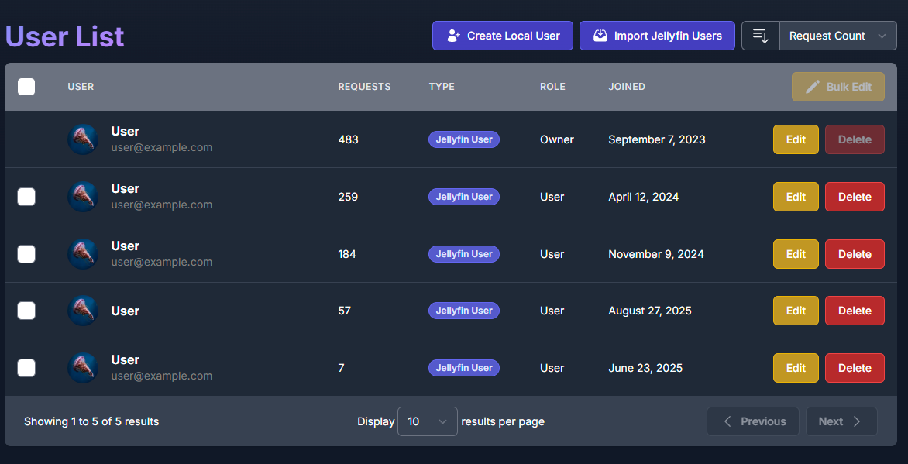

Frequently Asked Questions¶
Use these answers to find the right settings or troubleshooting guide. For installation failures, start with Troubleshooting installation.
General Questions¶
What is Jellyfin Enhanced?¶
Jellyfin Enhanced (JE) adds personal controls, playback enhancements, media tags, pages, and optional service integrations to Jellyfin. Start with Quick start, then use Settings Overview to find the administrator and personal controls.
Can I customize the keyboard shortcuts?¶
Yes. You can change shortcut combinations for your account, and changes save automatically.
- Open your Enhanced Panel with ? while you are not typing in an input or text area.
- Select Shortcuts.
- Click a binding and press your new combination.
While the binding is listening, Backspace restores the administrator binding and Del disables that action for you.
Administrators control shortcut availability under Keyboard:
| Setting | Default | What it does |
|---|---|---|
| Disable Keyboard Shortcuts | Off | Stops ordinary JE shortcuts and hides Shortcuts in the personal panel. |
You can still open the panel with ?, and you cannot change that key. See Enhanced settings for the controls and Settings Overview for alternative panel entry points.
Details
Changes save to your account's server-side shortcuts.json. Modifier-only keys are ignored. Duplicate combinations are rejected; player actions also reject keys reserved by Jellyfin's player. A rejected binding flashes red and shakes. Percentage jumping is read-only.
Does this work on mobile apps?¶
To use JE's web controls, your app must load the web interface served by your Jellyfin server. Playback enhancements also need a browser player that JE can control. Check Compatibility for your app and playback mode.
Does this work on Android TV or other TV platforms?¶
Native apps do not receive JE's web controls, but enabled server features can still affect them. Examples include Spoiler Guard, hiding content from supported lists and Home rows, automatic requests, experimental Native Poster Tags, and data synchronized into Jellyfin. Each has its own switches and limits on the screens and clients it supports. See Compatibility.
Is this plugin affiliated with Seerr?¶
JE is an independent project that integrates with Seerr. Report JE integration problems through JE's bug-report process. If the same problem occurs directly in Seerr, investigate that service separately.
How do I change the plugin's language?¶
You can choose a JE language independently of Jellyfin's language.
- In your personal Settings, open Language Settings → Display Language.
- Select a language. JE saves your preference and reloads the page.
| Setting | Default | What it does |
|---|---|---|
| Display Language (per user) | Auto | Follows Jellyfin's language unless a server admin sets a starting language or you choose your own. |
| Default UI Language (admin, Display) | System Default | Sets the starting JE language for new users; they can change it in their personal settings. |
How it works
With Auto in your personal settings, JE follows Jellyfin's language and uses English if that translation is unavailable. Clear Translation Cache clears this browser's saved translations and reloads. It normally reloads the translation included with your installed plugin. See Contributing Translations for languages, loading order, and release timing.
Where is the userscript version?¶
The userscript is discontinued. An archived userscript remains for the old basic shortcut implementation; it is not a substitute for the current plugin.
Does JE send usage statistics?¶
Usage reporting is opt-in and off by default.
- As an administrator, open Admin → Usage Statistics.
- Turn on Share Anonymous Usage Statistics if you want to participate.
- Use Preview to see what you would share before you save.
| Setting | Default | What it does |
|---|---|---|
| Share Anonymous Usage Statistics | Off | Enables optional analytics reporting. |
| Feature toggle states (on/off only) | On | Includes feature-switch states and selected text settings when reporting is enabled. |
| Feature usage counts | On | Includes usage counts when reporting is enabled. |
| Data file sizes (bytes only, never contents) | On | Includes only the total size of the custom branding directory, without file names or contents, when reporting is enabled. |
| Reporting interval (days) | 15 | Sets the interval, clamped to 7–30 days. |
How it works
Reports always include an anonymous installation ID, plugin and Jellyfin versions, and the Jellyfin build target, even with all three categories off. Turning reporting on schedules a report right away. Turning it off asks the analytics service to exclude your registered installation from public statistics.
Optional analytics is separate from requests needed for enabled integrations, assets, or hosted documentation. See Community Analytics for the full privacy and reporting details.
Installation & Setup¶
Plugin Compatibility¶
See Compatibility for Jellyfin versions, clients, layouts, companion plugins, and integration requirements. Use the shared manifest in the Installation Guide to get the matching server build.
Plugin not appearing after installation?¶
Check whether the server plugin is loaded before diagnosing the panel. Follow Plugin Not Appearing After Installation.
Scripts not loading after installation¶
Check whether the page includes JE's script and whether the scripts load. Follow Scripts Not Loading.
Details
Normal injection is not repaired simply by running the startup task.
Update not working properly?¶
Compare the running version and build target, then check client and proxy caching. Follow Update Not Working.
I see "permission denied" errors in logs!¶
Find the path and operation in the full error, then use Permission Issues.
Details
Normal injection needs no writable web directory. User data, branding, caches, logs, and old-tag cleanup have different storage requirements.
Features & Functionality¶
Auto-skip intros not working?¶
Check that the item has Intro or Outro segments, then enable the matching auto-skip control.
Required
JE reads Jellyfin's stored Intro and Outro media segments; it does not detect them. A segment provider such as Intro Skipper must supply usable start and end boundaries.
- Check that the item has segments before changing JE settings. The details below explain how to check them with a request.
- In the Enhanced panel's Auto-Skip Settings, enable the relevant control.
| Setting | Default | What it does |
|---|---|---|
| Automatically Skip Intro | Off | Seeks to the end of a stored Intro segment. |
| Automatically Skip Outro | Off | Seeks to the end of a stored Outro segment. |
See Playback controls for the workflow and Enhanced settings for administrator defaults.
Details
An authenticated request to Jellyfin's /MediaSegments/{itemId} can confirm the item's segments; a signed-out request may return 401. Do not share API keys in reports. JE does not need a visible native skip button or English button text.
Direct play/stream and HLS support the intended local seek. Progressive transcodes can stall or fail to seek ahead, and this local seek does not synchronize a SyncPlay group. Seeking backward into a skipped segment suppresses immediate re-skipping.
Seerr integration not connecting?¶
Test the connection from Jellyfin first, then check account import and permissions separately.
- In administrator Seerr, configure Enable Seerr integration, Seerr URL(s) (One per line), and Seerr API Key.
- Select Test beside the key.
- For a linked account, use Permission Audit → Run Audit to check permissions needed by enabled features.
Required
Jellyfin's server must be able to reach Seerr. In a container, localhost means that container.
Use Seerr settings for setup, defaults, sign-in/import instructions, and connection diagnosis; use Permission Audit for authorization checks.
These screenshots show external account management. They do not show JE feature permissions:


 Manual import is an alternative when automatic import is not enabled; this dialog does not demonstrate access denial.
Manual import is an alternative when automatic import is not enabled; this dialog does not demonstrate access denial.
Tags not showing on posters?¶
Open Media Tags in the Enhanced panel, turn on the tag groups you want on its Groups tab, and check the item's metadata; your saved choices override administrator defaults. See Tags & Badges for setup, scopes, and native posters, and the score sources and fallback rules for season/episode differences between server-cache, batch, and player paths. For stale data, use targeted cache troubleshooting.
Bookmarks not syncing across devices?¶
Sign in with the same Jellyfin account and reload the other device. JE saves bookmarks, main Enhanced preferences, and shortcut overrides on the server for that account.
- Reload the page to pick up changes to bookmarks and other saved data. Reopen the personal panel to reload your main settings.
- If a bookmark still does not save or appear, check its failed request and the server log for storage errors.
See Smart Bookmarks for bookmarks and Settings Overview for user-data storage and backups.
How it works
Reopening the personal panel reloads your main settings from settings.json. Browser storage also holds caches and local UI state.
Why did changing an administrator default not change my settings?¶
Saved personal preferences take precedence over administrator defaults. Ordinary administrator saves do not continually replace your choices.
To change only some settings for existing users, change them in the admin page and use Apply the above in the banner that appears in that card. To deliberately replace all existing preferences:
- Save the desired administrator defaults.
- Use administrator Overview → Quick Actions → Apply all plugin settings to every user.
Warning
This action replaces personal choices. Back up first and have users reload their clients afterward. See Settings Overview for its scope and recovery instructions.
Details
The action also saves the current form. It replaces settings.json for known user directories, resets Hidden Content settings while keeping hidden items, and resets existing Spoiler Guard preference overrides while keeping their lists. It does not reset shortcuts.json.
What should I back up, and does uninstalling erase my data?¶
Back up the plugin XML configuration and JE's data, including personal data, shared records, and uploaded branding. Uninstalling JE leaves your saved user data in place.
Follow Settings Overview for storage, backup, and restoration instructions.
Details
Back up the plugin XML configuration and JE's data, including personal settings.json, shortcuts.json, bookmark.json, elsewhere.json, hidden-content.json, and spoilerblur.json. User directories live beneath <PluginsPath>/configurations/Jellyfin.Plugin.JellyfinEnhanced/<lowercase-user-id-without-hyphens>/.
Keep shared records, uploaded branding, and native-poster-tags.key too. You can find custom_branding inside a folder beside the plugin XML configuration file, with the same name minus .xml. JE can download cdn-cache again. Keep native-poster-tags.key so your restored server can still use existing personalized poster links; losing it can leave clients showing original artwork until they refresh metadata.
Uninstalling JE attempts to remove any old script added to the web files and leaves your saved user data in place. Deleting a Jellyfin account can also leave its personal settings, reviews, and activity records behind.
Pause screen not appearing?¶
Turn on your personal pause screen and stop interacting with the player for the configured delay.
- Open personal Settings → Playback Settings and make sure Custom Pause Screen is on.
- Pause a video in a browser player JE can control.
- Stop interacting for the configured delay. Fullscreen and theater mode are optional.
Personal controls:
| Setting | Default | What it does |
|---|---|---|
| Custom Pause Screen | On | Shows the overlay during paused browser playback. |
| Delay before showing (seconds): | 5 | Sets how long you must stop interacting before the overlay appears. |
Details
Moving the mouse, touching the screen, or pressing a key postpones the overlay. If you dismiss it, it stays hidden until you resume and pause again.
See Playback controls and CSS Customization for use and styling.
Reviews, Elsewhere, or Seerr icons not working?¶
Identify what failed before treating it as a TMDB problem:
- TMDB-backed reviews or availability: check the configured JE TMDB key, provider IDs, the relevant proxy request, and server connectivity. See Elsewhere & Reviews Settings.
- Seerr search or requests: check service connectivity, account linking, and permissions through Seerr settings.
- Stored poster ratings: check Jellyfin rating metadata using Media tags.
- Static icons: check local CDN asset requests using installation troubleshooting.
- Local user-written reviews: check the JE review request and server log; these are separate from fetching external TMDB reviews. See User Reviews.
Is "Remove from Continue Watching / Next Up" destructive?¶
It preserves playback progress and watched state.
- Enable your personal Add Remove from Continue Watching & Next Up Buttons preference.
- For lasting row filtering, a server admin must enable Enable "Remove from Continue Watching" or Enable Hidden Content.
- Enable your personal Enable Content Hiding and the filter for the affected row.
Administrator settings:
| Setting | Default | What it does |
|---|---|---|
| Enable "Remove from Continue Watching" | Off | Turns on server row filtering and sets the starting value of the personal removal-button preference. |
| Enable Hidden Content | Off | Enables the broader Hidden Content feature and its management page; row removal works without this switch. |
Personal settings start with administrator defaults; you can change them for your account:
| Setting | Default | What it does |
|---|---|---|
| Add Remove from Continue Watching & Next Up Buttons | Off | Adds the removal controls to item menus, even with both server switches off. |
| Enable Content Hiding | On | Enables your hidden-item filters. |
| Filter Continue Watching | On | Hides removed items from this row. |
| Filter Next Up | On | Hides removed items from this row. |
On the Hidden Content management page, Continue Watching-only entries use Add back to Continue Watching; other scopes use Unhide.
See Content management and Enhanced settings for scopes, prerequisites, and restoration.
How it works
Starting playback clears a matching Continue Watching-only hide. A combined home-sections hide becomes Next Up-only; Next Up-only and global hides remain.
Customization¶
How do I customize tag appearance?¶
Use the built-in tag settings first. For selectors and CSS examples, see Media tags and CSS Customization.
How do I upload custom branding?¶
Upload images to replace Jellyfin's branding assets.
- As an administrator, open Jellyfin Enhanced → Extras → Custom Image Assets.
- Select or drop an image into a slot.
- Check its preview, reported dimensions, and upload status.
- Refresh the web client.
| Asset slot | Recommended dimensions |
|---|---|
| Icon Transparent | 536×536 pixels |
| Favicon | 256×256 pixels |
| Banner Dark | 1302×378 pixels |
| Banner Light | 1302×378 pixels |
| Apple Touch Icon | 180×180 pixels |
Upload requirements
Use an image file no larger than 10 MiB in a format suitable for the slot. You need administrator access, and Jellyfin must be able to write to the branding folder.
Warning
Uploads and deletions persist immediately. They do not wait for a configuration save.
The separate URL-based override has these administrator settings:
| Setting | Default | What it does |
|---|---|---|
| Enable Splash Screen Override | Off | Shows the configured logo on a temporary black loading overlay until Jellyfin is ready or the 20-second timeout expires. |
| Splash Screen Image URL | /web/assets/img/banner-light.png |
Selects the splash image when the override is enabled. |
See Other settings for formats and limits.
How it works
Slots initially have no uploaded file. JE saves each image in its original format without converting it. JE's image replacements are enabled by default (DisableBrandingMiddleware=false); File Transformation is not required.
Why aren't my subtitles using the Jellyfin Enhanced styling?¶
JE can style text subtitles drawn by Jellyfin's web player. For Position, select Custom in Jellyfin's subtitle settings so Jellyfin draws the captions instead of your browser.
Note
These controls cannot style subtitles burned into the video, image-based tracks, or subtitles drawn by a different player.
See Playback controls for supported playback modes and Compatibility for client limits.
How do I turn off subtitle styling and use Jellyfin's own?¶
Enable Disable Custom Styles to use Jellyfin's own subtitle styles.
- Open personal Settings → Subtitle Settings.
- Turn on Disable Custom Styles and reload.
Personal setting:
| Setting | Default | What it does |
|---|---|---|
| Disable Custom Styles | Off | Stops JE's subtitle styling so Jellyfin's own styles apply. |
Administrators set the starting preference under Playback:
| Setting | Default | What it does |
|---|---|---|
| Disable Custom Subtitle Styles by default | Off | Starts users without saved preferences with JE's subtitle styling disabled. |
Saved personal choices take precedence over the administrator default. See Enhanced settings for the full subtitle controls, or Settings Overview if you intend to overwrite preferences for everyone.
Can I change tag positions?¶
Yes. Open personal Settings and choose the position for the relevant tag type. See Media tags for controls and CSS Customization for advanced styling.
Troubleshooting¶
How do I gather logs for bug reports?¶
Reproduce the problem once and note the time. This helps you match browser and server log entries.
- Open developer tools with F12 and select Console. Filter for
Jellyfin Enhancedand copy the relevant error, stack trace, and nearby messages that explain it. - In Network, filter for
JellyfinEnhancedand reproduce the failure. Record the request path, method, status code, and useful response body. - Open Jellyfin's server logs from its administration tools or configured log directory. Include the relevant error and nearby lines rather than an unrelated full log. The details below explain which JE logs to look for.
Warning
Before sharing logs, screenshots, or network exports, redact API keys, access tokens, cookies, passwords, private URLs, usernames, and other personal information.
Collect evidence promptly. Then follow Report issues for the environment details to include.
Details
Look for the Jellyfin.Plugin.JellyfinEnhanced logger category and the dedicated JellyfinEnhanced_yyyy-mm-dd.log file. JE's dedicated logs are in Jellyfin's configured log directory; its messages also appear in Jellyfin's main log.
When JE starts, it removes dedicated log files created more than three days ago. It checks the file's creation time, not the date in its name, and only performs this cleanup when starting.
A proxy login page returned instead of JSON or a script is useful evidence. Leave Dev Mode off unless you need to check which individual script fails to load. See Scripts Not Loading for that diagnostic option.
Common error messages and solutions¶
| Error or symptom | Next step |
|---|---|
BUILD/HOST MISMATCH |
Install the matching build. |
index.html access denied |
Check whether JE was removing an old script or writing a new one. |
| Plugin loaded but panel missing | Inspect HTML and client requests. |
| Bookmarks/settings fail to save | Check the failing storage operation. |
| Seerr search/account/permission failure | Check Seerr setup and Permission Audit. |
| Calendar or Requests is blank | Use *arr troubleshooting, including source and proxy checks. |
| Administrator tabs do nothing | Compare local and proxy access. |
| Tags or translation text are stale | Target the affected cache. |
Native Home tabs and the Custom Tabs plugin¶
JE can show Bookmarks, Hidden Content, Requests, Calendar, Recommendations, Activity, and Catch Up as native Home tabs without a companion plugin.
- Choose either a native Home tab or Custom Tabs for each JE page using JE Pages & Tabs.
- If you let JE add a Custom Tabs entry, remove any duplicate you added yourself.
- If you choose Plugin Pages, restart Jellyfin when using an older version or when updating its entries fails.
Check Compatibility for layout and companion requirements. If detection fails, follow Plugin detection issue.
How it works
Native JE tabs can coexist with external Custom Tabs; JE tabs follow those tabs. Generated links include a current numeric index and stable identity, such as #/home?tab=4&jeTab=bookmarks or jeTab=catchup.
With a compatible Plugin Pages 3.0+ version, JE tries to update its entries when you save. Restart Jellyfin if you use an older version or that update fails. Add the Custom Tabs entry for me works when JE supports your Custom Tabs configuration.
What is Catch Up?¶
Catch Up is a page for marking titles watched, dismissing them, or adding them to your watchlist.
- As an administrator, enable it under Pages → Catch Up and choose its placement.
- Open it from the chosen location. For Plugin Pages, use its registered entry.
Catch Up can record activity. You need administrator access to view its activity feed and summary. See Enhanced features for the workflow, Enhanced settings for settings and logging limits, and JE Pages & Tabs for navigation.
Details
A native link uses jeTab=catchup.
Plugin conflicts?¶
Test with a clean browser profile, then check custom CSS, browser extensions, and companion plugins one at a time.
Details
The Enable Splash Screen Override help warns that it might cause strange behavior with Media Bar. This is a conditional warning, not a guarantee that the plugins always conflict.
For nonworking administrator tabs, compare local/proxied access through installation troubleshooting. Include the theme and relevant companion versions in a bug report.
Performance issues?¶
Find where the delay happens before changing unrelated settings.
- Check whether the browser takes a long time to display the page, a request waits for a response, or a server task takes too long.
- Compare with a clean profile and temporarily disable the affected feature to narrow it down.
- Check request timing and server logs.
For tags, check cache mode and exclusions in Media tags. For service pages, use Seerr settings or *arr troubleshooting. Routine browser-cache clearing is not a performance fix.
Support & Community¶
Where can I get help?¶
Use Support & Community for questions, Report issues for reproducible bugs, Feature Requests for proposals, and Contributing Translations for language work.
Related Projects¶
See Related Projects for other projects and Compatibility for companion plugins.
Still Have Questions?¶
Search the support channels and existing issues first. When asking for help, include the versions, client, reproduction steps, and relevant redacted logs described in Report issues.